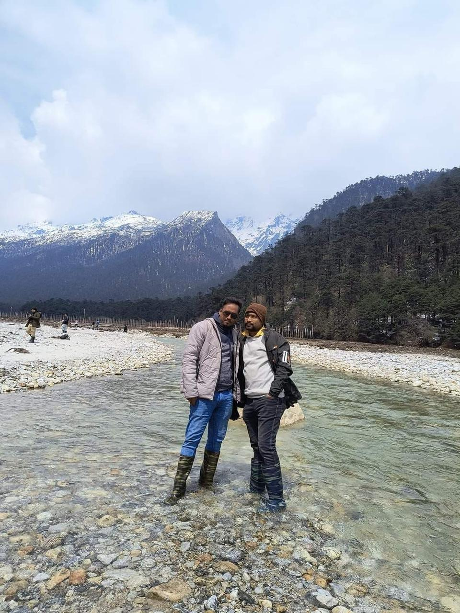
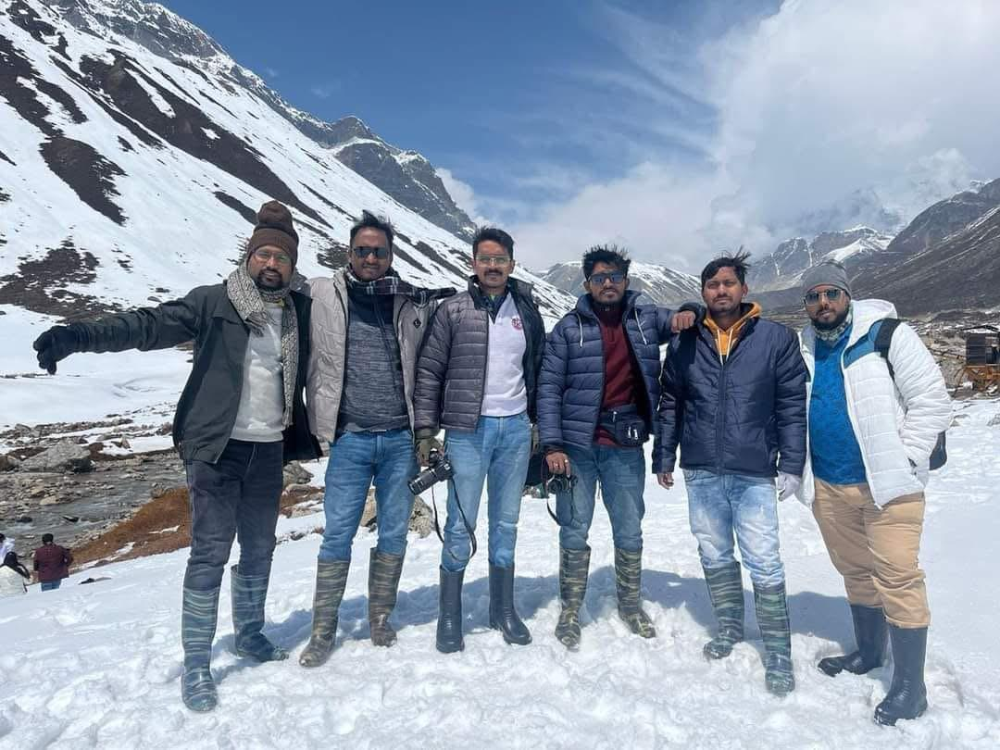
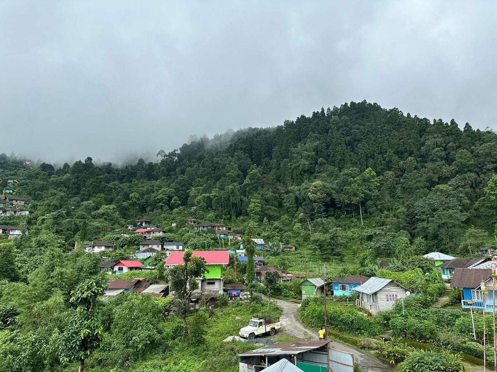
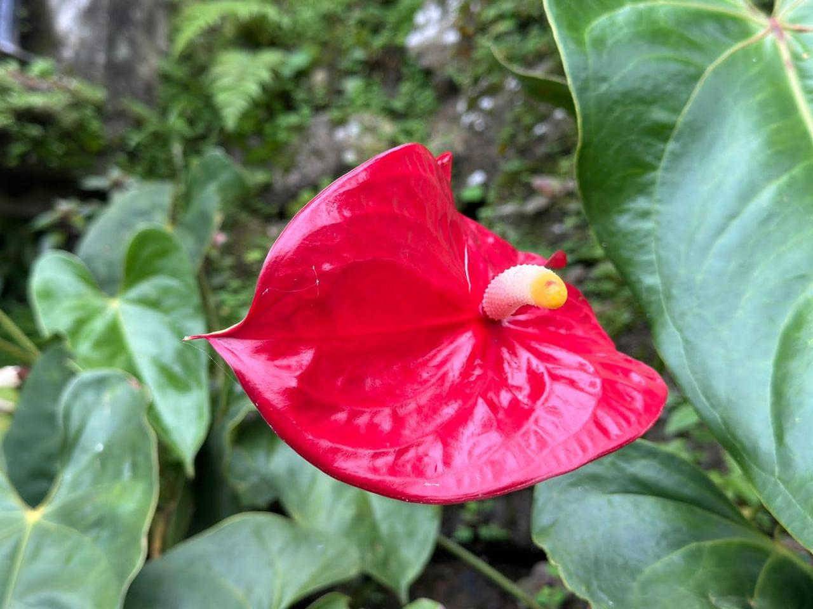
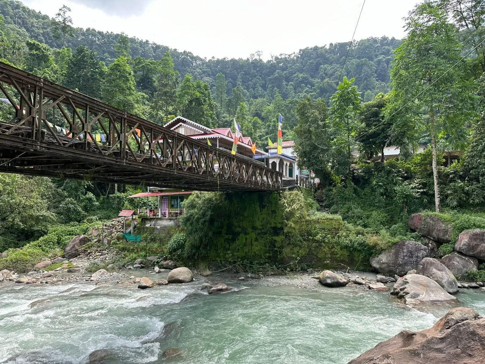
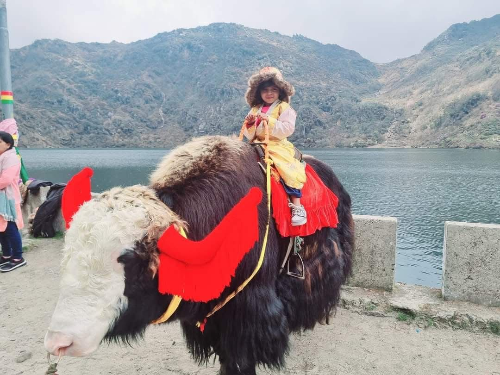
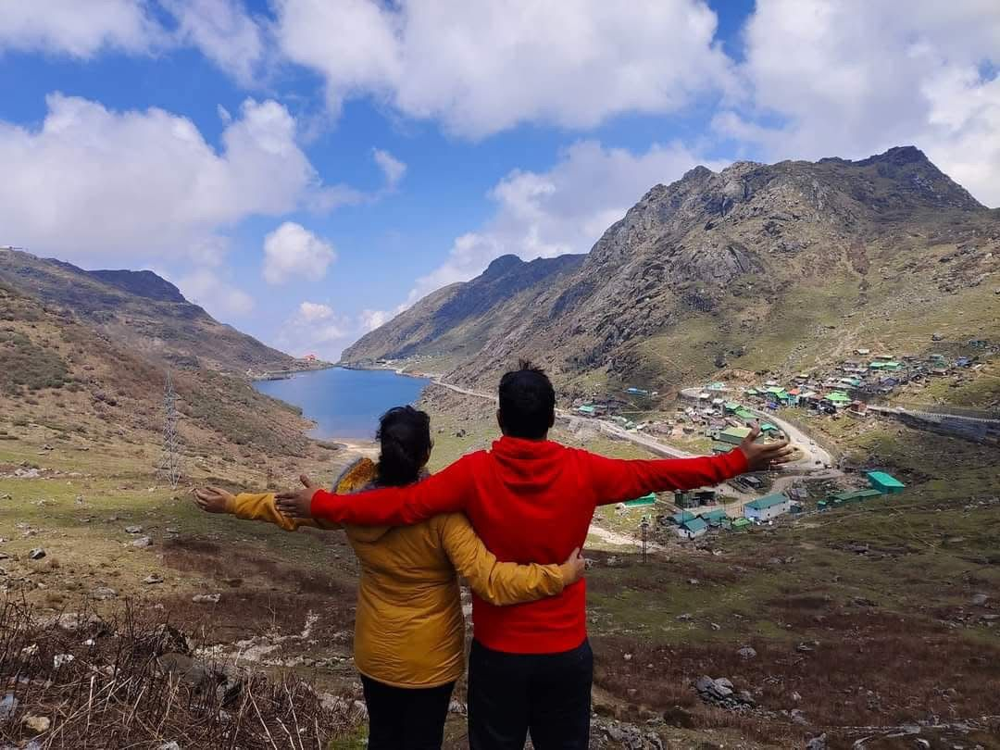

Top North Sikkim Tourist Places

Gurudongmar Lake
One of the highest lakes in the world at 17,800 ft, Gurudongmar Lake is a sacred water body revered by Buddhists and Sikhs. The lake remains partially frozen even in summer and offers breathtaking views of snow-capped mountains.
- Altitude: 17,800 ft
- 68 km from Lachen
- Temperature: -20°C to 5°C

Yumthang Valley
Known as the 'Sanctuary of Flowers', Yumthang Valley is famous for its meadows of alpine flowers, hot springs, and stunning mountain views. Spring transforms the valley into a carpet of rhododendrons and primulas.
- Altitude: 11,800 ft
- 25 km from Lachung
- Features: Hot Springs

Zero Point (Yumesamdong)
Located at the Indo-China border, Zero Point is the last civilian accessible point in North Sikkim. The area is covered with snow for most of the year and offers panoramic views of snow-clad peaks and glaciers.
- Altitude: 15,300 ft
- 24 km from Yumthang
- Near China Border

Lachen
A picturesque mountain village and the base for Gurudongmar Lake excursions. Lachen offers stunning views of snow-covered peaks, traditional Sikkimese architecture, and warm hospitality. The village is home to Lachen Monastery.
- Altitude: 8,800 ft
- 118 km from Gangtok
- Homestay Available

Lachung
A charming village nestled in the mountains, Lachung serves as the gateway to Yumthang Valley. The village features apple orchards, waterfalls, and the beautiful Lachung Monastery. Experience authentic Lepcha culture here.
- Altitude: 8,600 ft
- 125 km from Gangtok
- Apple Orchards

Chopta Valley
A hidden gem en route to Gurudongmar Lake, Chopta Valley is a high-altitude meadow with spectacular mountain views. The valley offers pristine landscapes, yak grazing grounds, and stunning sunrise vistas.
- Altitude: 13,200 ft
- 50 km from Lachen
- Best for Sunrise

Thangu Valley
One of the last inhabited villages before Gurudongmar Lake, Thangu is a remote settlement at high altitude. The village offers unique insights into Himalayan life and serves as a rest stop for travelers.
- Altitude: 13,500 ft
- 57 km from Lachen
- Tibetan Culture

Kala Patthar
A scenic viewpoint offering panoramic views of the surrounding mountains and valleys. The black rock formations contrast beautifully with the white snow, creating stunning photographic opportunities.
- Altitude: 14,500 ft
- Photography Spot
- Mountain Views

Shingba Rhododendron Sanctuary
Home to over 40 species of rhododendrons, this sanctuary comes alive in spring with vibrant blooms. The sanctuary also features diverse flora and fauna, making it a paradise for nature lovers and photographers.
- 40+ Rhododendron Species
- On Yumthang Road
- Best: April-May